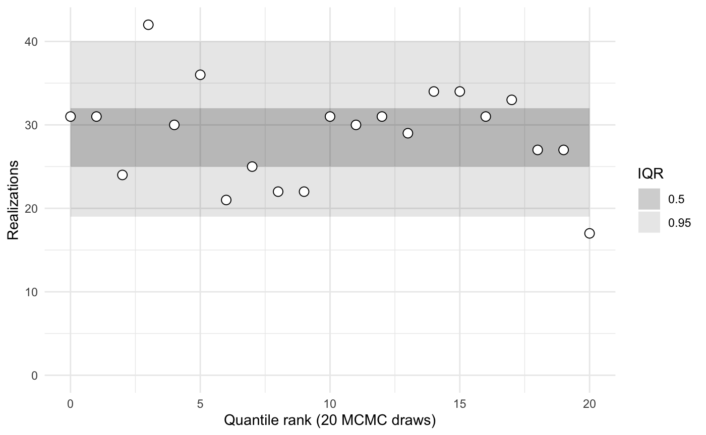
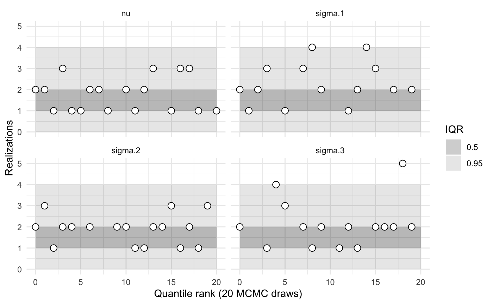
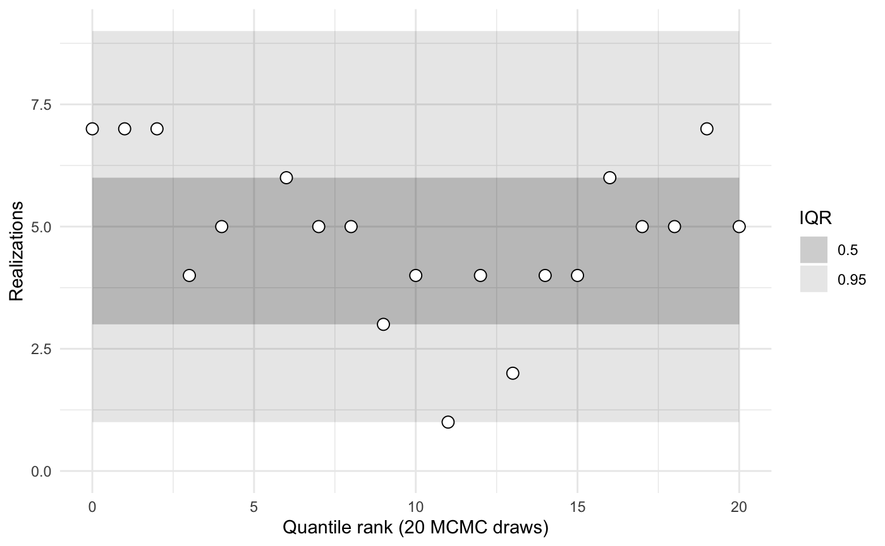
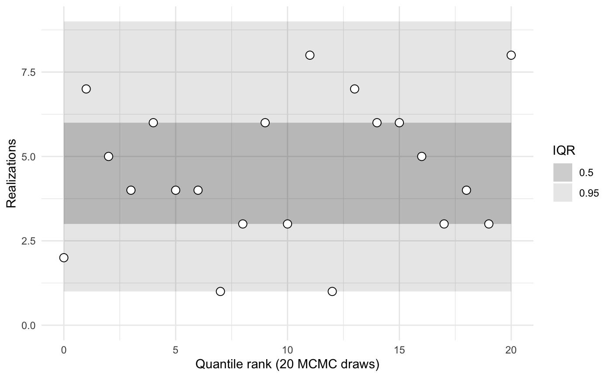
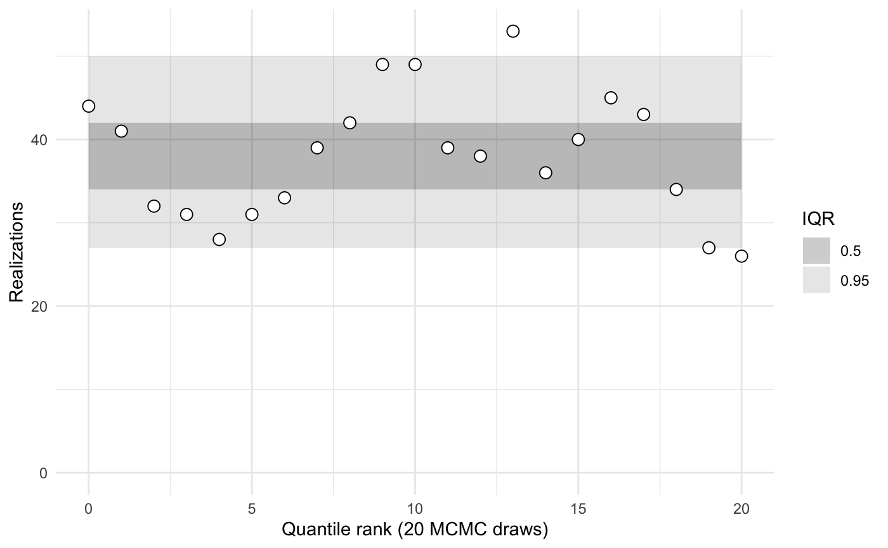

library(sbcrs)
library(rstan)
#> Loading required package: StanHeaders
#> Loading required package: ggplot2
#> rstan (Version 2.19.2, GitRev: 2e1f913d3ca3)
#> For execution on a local, multicore CPU with excess RAM we recommend calling
#> options(mc.cores = parallel::detectCores()).
#> To avoid recompilation of unchanged Stan programs, we recommend calling
#> rstan_options(auto_write = TRUE)We want to validate a Stan model. The Stan model used in this example has matrix, vector, and scalar parameters. The modeled data y have means and standard deviations that vary by group and type.
data {
int<lower = 0> n_obs;
int<lower = 0> n_groups;
int<lower = 0> n_types;
int<lower = 1> group[n_obs];
int<lower = 1> type[n_obs];
vector[n_obs] y;
}
parameters {
matrix[n_groups, n_types] mu;
vector<lower = 0>[n_types] sigma;
real nu;
}
model {
sigma ~ exponential(1);
for (g in 1:n_groups) {
mu[g,] ~ normal(0, 1);
}
for (o in 1:n_obs) {
int g;
int t;
g = group[o];
t = type[o];
y[o] ~ normal(mu[g, t], sigma[t]);
}
nu ~ normal(0, 1); // just a nuisance scalar parameter
}Compile the Stan model.
To validate the model using the SBC package, we need to define four functions. These functions must have signatures matching those specified in help('SBC', package = 'sbcrs') (under $new(data, params, modeled_data, sampling)).
The first function generates a named list with a new (possibly random) data set. All of the variables defined in the Stan model’s data section must be represented in this list, except:
Variables given an explicit value in the data section
Variables modeled probabilistically in the model section (these are generated by the modeled_data function described below).
gen_data <- function(seed) {
set.seed(seed + 1e6)
n_obs <- 100
n_groups <- 5
n_types <- 3
group <- sample.int(n_groups, size = n_obs, replace = TRUE)
type <- sample.int(n_types, size = n_obs, replace = TRUE)
list(n_obs = n_obs, n_groups = n_groups, n_types = n_types, group = group, type = type)
}The parameter seed in gen_data is used to set the random seed. It is important to set the random seed in all four functions, otherwise the rank statistics will be biased. Moreover, because the same value of seed is passed to all four functions, it is good practice to add an offset when setting the seed.
Generate random parameters (but not the modeled data) from the prior distributions indicated in the Stan model.
Generate the modeled parameter—the one that is defined in the data section of the Stan model and modeled probabilistically in the model section. This parameter needs to be generated from the same likelihood (conditional on the model parameters) indicated by the Stan model.
Define a function to draw samples from the Stan model. This function ties together the Stan model my_model and the lists returned by the functions defined above. When calling rstan::sampling, pass in a list concatenated from the data and modeled_data lists.
To create a new calibration object, call SBC$new() passing in references to the functions defined above.
Calibration involves generating data and parameters, and sampling from a Stan model many times. To speed up this process, take advantage of all of your machine’s cores.
To run the calibration routine, call the $calibrate() method on my_sbc. It will update the fields in this object with the output of the calibration routine.
The results of the calibration routine are now stored in the $calibrations field. This is a list of length N = 32. It contains the data and parameters generated for each. If keep_stan_fit = TRUE, then it also stores the stan_fit objects. This can be memory-intensive, but also useful for debugging.
Each calibration in $calibrations also contains a named list called $ranks. Each parameter var has a corresponding named entry called $ranks$var, whose value is the number of samples (out of a maximum L) for which the sampled value of var was less than params$var.
purrr::map(my_sbc$calibrations, 'ranks')[1:3]
#> [[1]]
#> [[1]]$sigma
#> [1] 0 9 17
#>
#> [[1]]$mu
#> [,1] [,2] [,3]
#> [1,] 16 7 7
#> [2,] 14 12 10
#> [3,] 12 14 11
#> [4,] 13 6 17
#> [5,] 5 3 18
#>
#> [[1]]$nu
#> [1] 0
#>
#>
#> [[2]]
#> [[2]]$sigma
#> [1] 0 10 13
#>
#> [[2]]$mu
#> [,1] [,2] [,3]
#> [1,] 2 1 13
#> [2,] 2 19 4
#> [3,] 17 3 8
#> [4,] 1 3 3
#> [5,] 9 3 16
#>
#> [[2]]$nu
#> [1] 2
#>
#>
#> [[3]]
#> [[3]]$sigma
#> [1] 2 0 8
#>
#> [[3]]$mu
#> [,1] [,2] [,3]
#> [1,] 17 15 7
#> [2,] 16 14 19
#> [3,] 9 5 14
#> [4,] 0 16 13
#> [5,] 12 3 16
#>
#> [[3]]$nu
#> [1] 15If the generating functions defined above match the Stan model, then these ranks should be uniformly distributed. That is, deviations from uniformity indicate the generating functions in R, the stan model, or both are misspecified.
A quick summary of the calibrations compares the rank statistics to typical inner quantiles.
my_sbc$summary()
#>
#>
#> iq expected.outside actual.outside
#> 0.50 0.50 0.4761905
#> 0.95 0.05 0.0952381When the number of parameters, N, or L are small, these estimates are noisy.
To visualize the ranks and compare them against typical inner quantiles, use the plot function.

Passing in the name of one or more parameters to the plot or summary functions yields statistics calculated only for those parameters.

my_sbc$summary('sigma')
#>
#> sigma.1
#> iq expected.outside actual.outside
#> 0.50 0.50 0.3571429
#> 0.95 0.05 0.0000000
#>
#> sigma.2
#> iq expected.outside actual.outside
#> 0.50 0.50 0.1764706
#> 0.95 0.05 0.0000000
#>
#> sigma.3
#> iq expected.outside actual.outside
#> 0.50 0.50 0.20000000
#> 0.95 0.05 0.06666667Because our Stan model allows the number of types and groups to vary, we would ideally test the model using different values of n_types and n_groups. Or, to understand how well the model scales with the number of observations, we might want to test different values of n_obs. To accomplish this, we can create a function that returns a data-generating function with different values of these three inputs.
new_gen_data_function <- function(.n_obs, .n_groups, .n_types) {
function(seed) {
set.seed(seed + 1e6)
n_obs <- .n_obs
n_groups <- .n_groups
n_types <- .n_types
group <- sample.int(n_groups, size = n_obs, replace = TRUE)
type <- sample.int(n_types, size = n_obs, replace = TRUE)
list(n_obs = n_obs, n_groups = n_groups, n_types = n_types, group = group, type = type)
}
}We can similarly wrap the creation of a new SBC object in a generating function.
new_sbc_object <- function(n_obs, n_groups, n_types) {
gen_data <- new_gen_data_function(n_obs, n_groups, n_types)
SBC$new(data = gen_data,
params = gen_params,
modeled_data = gen_modeled_data,
sampling = sample_from_model)
}1 group and 1 type, zero observations
sbc <- new_sbc_object(n_obs = 0, n_groups = 1, n_types = 1)
sbc$calibrate(N = 32, L = 20, keep_stan_fit = FALSE)
sbc$plot()
1 group and 1 type, 100 observations
sbc <- new_sbc_object(n_obs = 100, n_groups = 1, n_types = 1)
sbc$calibrate(N = 32, L = 20, keep_stan_fit = FALSE)
sbc$plot()
2 groups and 8 types, 200 observations
sbc <- new_sbc_object(n_obs = 200, n_groups = 2, n_types = 8)
sbc$calibrate(N = 32, L = 20, keep_stan_fit = FALSE)
sbc$plot()